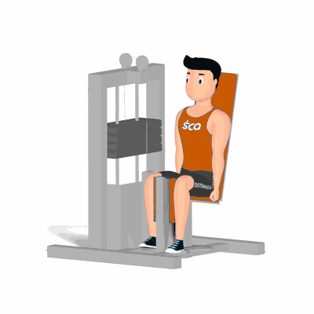

Banco Adutor

Exercício para fortalecimento e hipertrofia dos músculos da coxa, com enfoque a região interna próximo a virilha. Trabalha os músculos adutor longo.
Ficha Técnica
Tipo: Musculação
Grupo Muscular: Perna
Aparelho: Nenhum
Músculos: Nenhum
Como realizar
- Sente no banco do aparelho adutor, costas e glúteos bem apoiados;
- Posicione os pés no suporte da máquina e joelhos apoiados no encosto interno lateral;
- Concentre a força nos músculos trabalhados adutores;
- Empurre o suporte lateral com os joelhos, trazendo-os de forma simultânea um próximo ao outro;
- Manter a contração máxima dos músculos por um instante;
- Retorne à posição inicial de forma controla, repita os movimentos.
 RC STORE
RC STORE